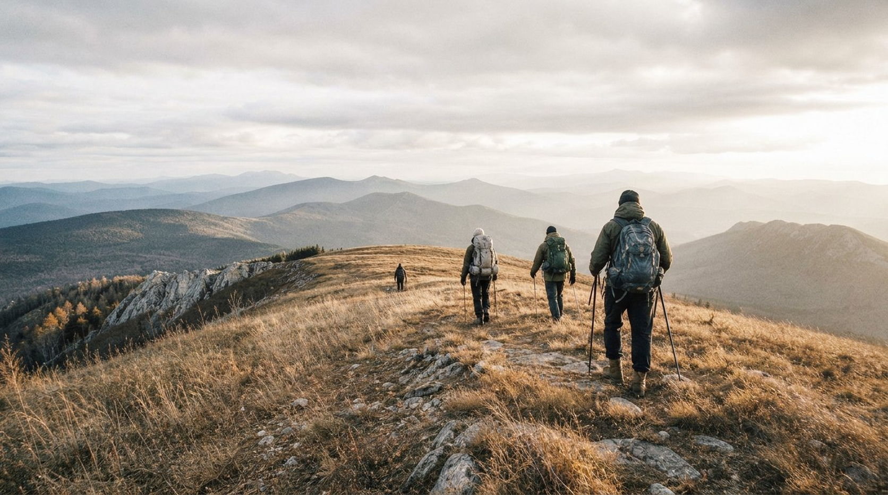

01Дорога
Магнитогорск → Белорецк → маршрут → Магнитогорск. Обратно в тот же вечер.

Новинка · выезд из Магнитогорска
Утром садитесь в машину у автовокзала Магнитогорска — вечером возвращаетесь туда же. Между этим: заброска на квадроцикле, вершина Ялангаса 1 297 м, горячий ужин в Отнурке и весь Южный Урал с высоты птичьего полёта.
Главное в двух словах
Магнитогорск и Белорецк разделяют 85 километров и полтора часа дороги. Мы забираем вас на автовокзале и привозим обратно в тот же вечер — со всеми впечатлениями дня, который вы не забудете.
В цену входят: дорога Магнитогорск — Белорецк — Магнитогорск, заброска на квадроцикле, гид, горячий ужин в Отнурке и страховка. Шесть мест в машине, на группу — несколько машин. Дети до 5 лет не допускаются — это требование безопасности техники.

Программа
Расписание проверено на сотнях выездов. Всё, что нужно собрать, — это вы и удобная обувь.
Автовокзал, у выхода на перрон. Гид встречает вас лично, проверяет состав группы и говорит, что взять с собой.
Полтора часа по трассе. За окном постепенно начинаются горы — к Белорецку они уже везде.
Пересаживаемся на квадроциклы и уходим в сторону Отнурка. Начинается та часть, ради которой все ехали.
Поднимаемся по каменистой дороге до каменистых участков — это уже приключение само по себе.
Оставляем машины и идём по горно-лесной тропе. Показалась вершина — открывается весь хребет: гребень за гребнем до синей дымки на горизонте.
Чай, перекус и время посмотреть на Урал сверху. Никто не торопит: темп группы — по самому медленному.
Вниз пешком, обратно тем же путём — и на квадроциклах к Отнурку.
Горячий ужин после дня на ногах. Он входит в стоимость, платить отдельно не нужно.
Возвращаемся в Магнитогорск. К 21:00 вы уже дома — с фотографиями и уставшими ногами.
Что входит
Магнитогорск → Белорецк → маршрут → Магнитогорск. Обратно в тот же вечер.
Квадроциклы, водитель и топливо. За рулём водитель команды, не вы.
Андрей Иванович лично ведёт выезд. Аттестованный гид-инструктор.
Горячий ужин в Отнурке после спуска. Входит в стоимость.
Оформляем на каждого участника. Искать и доплачивать не нужно.
Рации у гида, телефон в зоне приёма, аптечка под маршрут и состав группы.
Расписание
Новый формат: один выезд в месяц, всегда в субботу. Так мы набираем полную машину из Магнитогорска — и никто не платит за полдороги в одиночку. Даты сезона — ниже, свободные места подтверждаем по телефону.
Почему раз в месяц, а не каждую неделю. Машина выезжает из Белорецка, встречает группу в Магнитогорске и возвращается. Если гонять её каждую субботу ради двух-трёх человек, дорога съест всю выручку — и цена в 4 500 ₽ перестанет быть честной. Один полный выезд в месяц — это предсказуемо и для вас, и для нас. Если вас компания от четырёх человек — позвоните: поставим отдельную субботу под вашу дату, будний день тоже возможен.
Вопросы
Не нашли ответ — позвоните, ответим в течение 15 минут.
Выезд от автовокзала Магнитогорска. Точное место и время сбора подтверждаем накануне — обычно это 06:45 у выхода на перрон. Дорога до Белорецка и обратно входит в стоимость.
Да, туда и обратно в тот же день. Выезд утром, возвращение около 21:00. Ночёвка не нужна.
Около полутора часов в одну сторону. Магнитогорск и Белорецк разделяют примерно 85 километров.
Позвоните — поможем добраться: подскажем, как удобнее приехать в Магнитогорск или Белорецк, и встретим на месте. У нас есть варианты и с выездом из Белорецка.
С 5 лет, если ребёнок едет пассажиром со взрослым. Дети до 5 лет на квадроциклы не допускаются — это требование безопасности техники. Билет от 4 000 ₽.
Удобную обувь, тёплую одежду и дождевик. Термос не нужен — чай и ужин с нас. Полный список присылаем после записи.
Андрей Иванович — основатель «АйДа! Белорецк», аттестованный гид-инструктор с лицензией. В его опыте — восхождение на пик Ленина, 7 134 метра.
Следующая суббота
Позвоните — проверим свободные места, назовём точную сумму и подтвердим точку сбора в Магнитогорске.
Позвонить: +7 (XXX) XXX-XX-XX